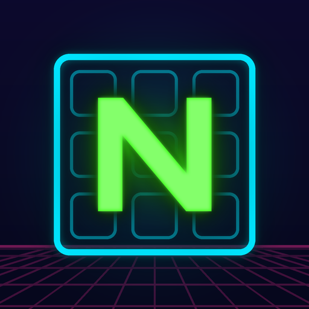

NUMATRIX
SUDOKU
Klasik Sudoku, neon ışıklı siberpunk bir dünyada. Gözü yormayan karanlık tasarımıyla gece oynamak için ideal.
Classic Sudoku in a neon-lit cyberpunk world, easy on the eyes and made for late-night play.
- 5 zorluk — Kolaydan Ekstreme; her bulmacanın tek çözümü var
- Günlük Görev — her gün yeni bir bulmaca ve seri takibi
- 5 tema — Matrix, Gündüz (beyaz), Siber, Elektrik, Gün Batımı
- Akıllı araçlar — notlar, sınırsız geri alma, ipuçları, hata vurgulama
- 9 dil — Türkçe, English, 中文, हिन्दी, العربية, Русский, Español, Français, Deutsch
- Dinlendirici müzik ve istatistikler; internetsiz de oynanır